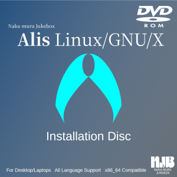
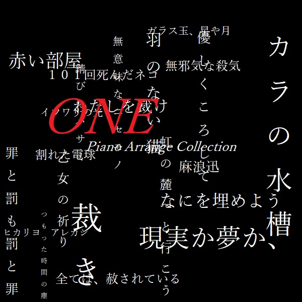

|
★トップページ★ NJBにようこそ。 まずはここから。 |
★NJBを知りたい★ NJBの情報とか 歴史とかを総まとめ。 |
★クリエイター一覧★ スタッフの紹介。 みんな宜しくね！ |
★製品情報★ NJBの製品情報 発売予定もあるよ！ |
★お問い合わせ★ 困った事がある？ だったらここを読め！ |
| その他のレーベル |
エヌ・ジェー・ビー音盤
| 麻浪迅「月影」(NJCH-1) | |
|---|---|
|
2024年内発売予定 / CD-EXTRA / 2ch Stereo / ￥1,000 (tax in) 体験版 (FLAC 48kHz/24bit) 麻浪迅のデビュー盤。ジャズのようなスカのような「月影」、ピアノ主体の「egret」を含む計5曲を収録。 通常のCDプレイヤーで再生できるCD-DA領域と、全楽曲のハイレゾ(48kHz/24bit)FLACを収録したエクストラ領域の豪華2本立て。 全楽曲において2チャンネルスピーカーでサラウンドを実現する「Qサウンド」処理済み。 CD-EXTRAのよくある質問はこちら 01. 月影 (4:05) 02. 朝焼け (5:26) 03. blank (4:55) 04. egret (5:16) 05. 重なる想い (4:36) All songs are composed and arranged by Jin Asa-nami. |
|
Ruritania
| 「浮かぶ雪雲、恋模様。」(RURH-1) | |
|---|---|
|
発売日未定 / DVD-ROM / ￥3,800 (tax in) ※18歳未満購入禁止 |
|
その他
| 「Kamuriki Linux」 | |
|---|---|
| ジャケット？そんなのはない。 |
随時更新 / DVD、ISOイメージ / 価格はエディションによる DebianベースのLinux/GNU/Xオペレーティングシステム。 インストール後すぐ使えるよう、様々なソフトウェアを同梱。 更に有償のProfessional版はクリエイター向けソフトウェアを色々追加。 |
| Alis Linux/GNU/X（旧：Univalent Versatile Environment） | |
|---|---|
|  |
毎年1、4、7、10月更新 / ISOイメージ&DVD-ROM / エディションにより異なる 日本語にも特化したArchベースのLinux/GNU/X。インストール段階からもう簡単。 フレーバーはLXQt、LXQt Amber、GNOME、Plasma、Xfceの5種類。 各種同人誌即売会にて有償版を販売予定。 無償版：￥0 有償版：￥2,200（税込み、60日間のインストールサポート及び「Multivalent」「Chaotic AUR」から厳選したソフトウェア、商用ソフトウェア付き） Alis公式ウェブサイト |
| 「DebISO 1.2」 | |
|---|---|
| ジャケット？そんなのはない。 |
2024.2.17 / tarball / ￥0 DebianやUbuntuのリミックスや派生ディストロを作るスクリプト。 プロファイルをいじれば誰でもできる。 written by Jin Asa-nami ダウンロード |
| 麻浪迅「Great Days Image Soundtracks」(NJBD-1) | |
|---|---|
| ジャケット？そんなのはない。 |
2021.12.05 / MP3 128kbps / 2ch Stereo / ￥0 ケ〇Q「素〇ら〇き〇々」のパロディアドベンチャー「素晴らしい日々」のイメージサウンドトラック。 まだ6曲しかデモ音源ができていなかったが、爪痕を残すために発表。作曲歴が短いのでお聞き苦しい点があったかも。 ライナーノーツも読んでね～～～＠＠＠～～ 01. 素晴らしい日々 ～DEMO～ (3:07) 02. 悪夢からの脱出 (2:21) 03. 見上げた星座 ～DEMO～ (1:26) 04. 主よ、人の望みの喜びよ Full Version (3:02) 05. 石造りの海 ～DEMO～ (1:16) 06. 練習曲作品10より 第1番「滝」～DEMO～ (1:42) Composed & Arranged by Hayate Naka-mura |
| 麻浪迅「ONE Piano Arrange Collection」(KNJB-1) | |
|---|---|
|  |
2021.05.05 / MP3 / 128kbps / 2ch Stereo￥0 NEXTON「輝く季節へ」のピアノアレンジ。キャッチコピーは「黒歴史、再び。」 黒歴史なのでジャケットも黒いのです(爆)。 元々はパロディアドベンチャー「Zer0」のBGMにする予定だったんだが、改めて聴いてみると「何だこの出来栄えは」って思ってしまいまして…結局MIDIで新たにアレンジしたのを「Zer0」に収録します。 Arranged by Hayate Naka-mura |